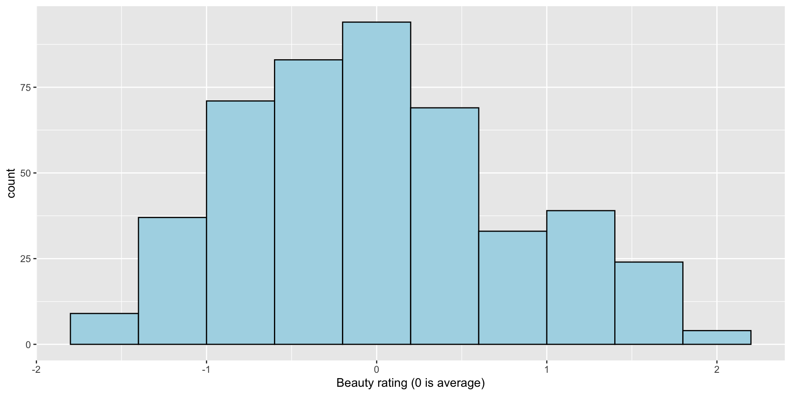
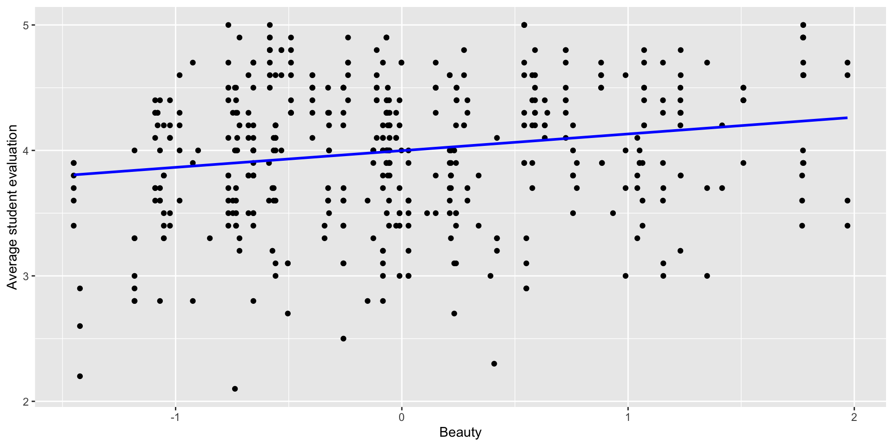
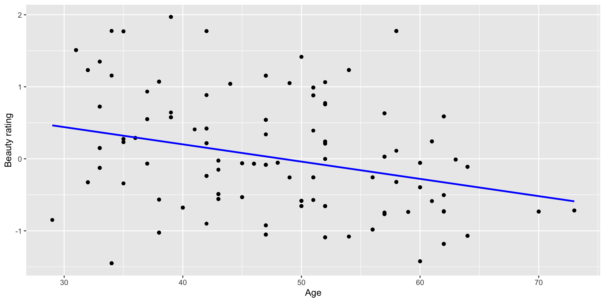

[1] 0.189Data Science for Business Applications
Class 01 - Linear Regression
Introduction
Course Goals
- Use regression to build predictive models
- Understand the benefits and limitations of the models we build
- Given a new business situation, select an appropriate model, build it, measure its effectiveness, and effectively communicate the results
- This is a practical course!
Why Does This Course Exist?
- Why bother learning this stuff when we can get ChatGPT to do data analysis for us?
- AI (and computing in general) is only useful when you have the expertise to be able to recognize the correctness (or not) of its output
- In this class, you’ll develop that expertise!
About the Course Staff
- Instructor: Henrique Bolfarine, Ph.D.
- Office hours: Tuesdays 11:00 AM - 12:00 PM (GSB 3.140 A)
- Email: henrique.bolfarine@austin.utexas.edu
- Course Assistants:
- Office hours: Many TA/CA office hours every week (both in person and on Zoom) - This should be your first option!
- You can ask any of the TAs/CAs about course content, but go to Ezgi for questions about logistics
Course logistics
Course Structure
- Units
- Unit A: Fundamentals of regression modeling
- Unit B: Applications and extensions
- Canvas
- Make sure you can log in and are enrolled in STA 235 in Canvas
Check out the home page for the weekly schedule and to meet the course staff
Statistical Computing
- We will use R and RStudio for statistical analysis throughout the course
- Make sure both are installed on your laptop and bring it to every class
- If you aren’t comfortable with R/RStudio from STA 301, don’t worry!

Weekly Cadence for a Particular Topic
- Due by the start of class on Monday/Tuesday: Perusall pre-class video/reading discussion covering the topic
- During class on Monday/Tuesday: Lecture, activities, practice topic
- Due by 11:59 PM the following Sunday/Monday: Homework covering the topic
- The following Thursday at the beginning of class: Checkpoint Quiz on that topic
Pre-Class Work
- This is a fast-paced course, so it’s essential that you think about the material before class.
- We will use Perusall for pre-class video and reading assignments.
- Use Perusall to ask your classmates questions, and share your knowledge, thoughts, and opinions.
- This helps you better understand the material and will help me gear class time to what topics you are having the most trouble with.
Pre-Class Work
- Pre-class assignments (typically videos) are due at the start of each class.
- Aim to chime in with at least a few thoughtful questions, responses, or comments for each reading assignment.
- Grading is based on effort and thoughtfulness of your questions and comments and your engagement with classmates and the text.
- Each assignment is scored 0-3, but with a reasonable effort you will get a 3 on each one (so don’t worry about your grade).
Homework
- Why homework?
- Homework is due each week at 11:59 PM the night before class and submitted through Canvas.
- Automatically graded; resubmit as many times as you want!
- OK to work together, but try the problems on your own first for maximum benefit.

Checkpoint Quizzes
- It is critical in this course to stay on top of things and not fall behind.
- Checkpoint Quiz at the start of each class will help you ensure that you are really learning the material and give you an early heads-up if you aren’t.
- We’ll drop your lowest quiz score from each unit (A and B).
- You’ll have access to RStudio and a “cheat sheet” during quizzes (don’t spend time memorizing anything!).
Mastery Exams
- Each unit concludes with a Mastery Exam:
- Unit A: March 9 or 10 at 7 PM
- Unit B: April 30
- You’ll have access to RStudio using Posit and a “cheat sheet” during exams (don’t spend time memorizing anything!).
Assessment Grading
- Unit A has 7 Checkpoint Quizzes and Unit B has 6.
- For each unit, there will be a Quiz drop (lowest grade).
Grading
| Component | Points |
|---|---|
| Pre-class work (Perusall) | 44 |
| Class Participation | 56 |
| Homework (13) | 195 |
| Checkpoint Quizze (13) | 325 |
| Exam A | 190 |
| Exam B | 190 |
| Total | 1,000 |
Getting Help
- My office hours: Schedule on Canvas.
- TA/CA office hours: Schedule on Canvas.
- Post questions in videos in Perusall (for questions about the course material).
- Post questions in group chats in Perusall (for general questions about the course, or homework questions).
- Perusall assignments are graded by the app not by the instructor.
Let’s do some statistics
- What personal characteristics about an instructor do you think are predictive of the scores they receive on student evaluations?

Hamermesh & Parker (2005) Data Set
- Student evaluations of \(N=463\) instructors at UT Austin, 2000-2002
- For each instructor:
- \(\texttt{eval}\): average student evaluation of teacher
- \(\texttt{beauty}\): average beauty score from a six-student panel
- \(\texttt{gender}\): male or female
- \(\texttt{credits}\): single- or multi-credit course
- \(\texttt{age}\): age of instructor
- (and more…)
Explore the data: \(\texttt{eval}\)

Explore the data: \(\texttt{beauty}\)
- Do you think there is a positive or negative relationship between beauty and teaching ratings?
Explore the data
The correlation \(r\) between two variables \(X\) and \(Y\) measures the strength of the linear relationship between them. Correlation ranges from \(-1\) (perfect negative relationship) to \(0\) (no relationship) to \(1\) (perfect positive relationship).
Correlation
- How can we interpret this?
- The
$sign accesses the variables in the data setprofs.csv.
The simple regression fit
Call:
lm(formula = eval ~ beauty, data = profs)
Residuals:
Min 1Q Median 3Q Max
-1.8002 -0.3630 0.0725 0.4021 1.1037
Coefficients:
Estimate Std. Error t value Pr(>|t|)
(Intercept) 3.9983 0.0253 157.73 < 0.0000000000000002 ***
beauty 0.1330 0.0322 4.13 0.000042 ***
---
Signif. codes: 0 '***' 0.001 '**' 0.01 '*' 0.05 '.' 0.1 ' ' 1
Residual standard error: 0.545 on 461 degrees of freedom
Multiple R-squared: 0.0357, Adjusted R-squared: 0.0336
F-statistic: 17.1 on 1 and 461 DF, p-value: 0.0000425Interpreting the coefficients
- Intercept:
- When beauty = 0 (average), predicted eval = 3.998 points
- The average evaluation for an average-looking instructor
- Meaningful this time!
- Slope:
- For a one unit (standard deviation) increase in beauty, the predicted eval increases by 0.13 points
- Comparing two instructors who differ by 1 SD on beauty, on average the more attractive instructor has an eval score 0.13 points higher
Is this the whole story?
Probably not!
- Lots of other predictors to consider
- Could the positive association be due to another variable that isn’t in the model yet (think bedrooms and living area)?
- Age might be important here – how? - On average, older instructors are less hot - As they age instructors might get better at teaching (experience) – or worse (stale or out of touch)
Is age actually correlated with beauty?
Multiple regression: eval on beauty and age
Call:
lm(formula = eval ~ beauty + age, data = profs)
Residuals:
Min 1Q Median 3Q Max
-1.8024 -0.3651 0.0741 0.3991 1.1021
Coefficients:
Estimate Std. Error t value Pr(>|t|)
(Intercept) 3.984401 0.133730 29.79 < 0.0000000000000002 ***
beauty 0.134063 0.033744 3.97 0.000082 ***
age 0.000287 0.002715 0.11 0.92
---
Signif. codes: 0 '***' 0.001 '**' 0.01 '*' 0.05 '.' 0.1 ' ' 1
Residual standard error: 0.546 on 460 degrees of freedom
Multiple R-squared: 0.0358, Adjusted R-squared: 0.0316
F-statistic: 8.53 on 2 and 460 DF, p-value: 0.00023Interpreting the coefficients
- In this case, whether we compare instructors of the same age or not, we get the same answer: Hotter instructors get higher evaluations on average.
- Good(ish) news – we ruled out one alternative explanation for the association between beauty and eval
- Are there others?
Summary
- As we add or remove variables in regression models, the coefficients on other variables can go up, down, or stay about the same
- It all depends on the relationships among the predictors and between the predictors and the outcome
- To understand what’s happening – and which variables we should include to estimate the right effect – we need to understand the effect we’re estimating and whether it’s the one we want
- In a few weeks we’ll learn how to build models that estimate the right effects, and how to build the best predictve models (these aren’t always the same!)
Next time: Errors and uncertainty
The other missing part of the story:
- Does the association between beauty and evals hold among ALL instructors, or just in this sample? - Could we be looking at a chance association that would disappear if we could get data on everyone?
- How accurately can we predict the sale price of a house from its size and other factors? - How do we quantify prediction errors? Even with many variables our predictions will be off by some amount. How wrong should we expect to be?